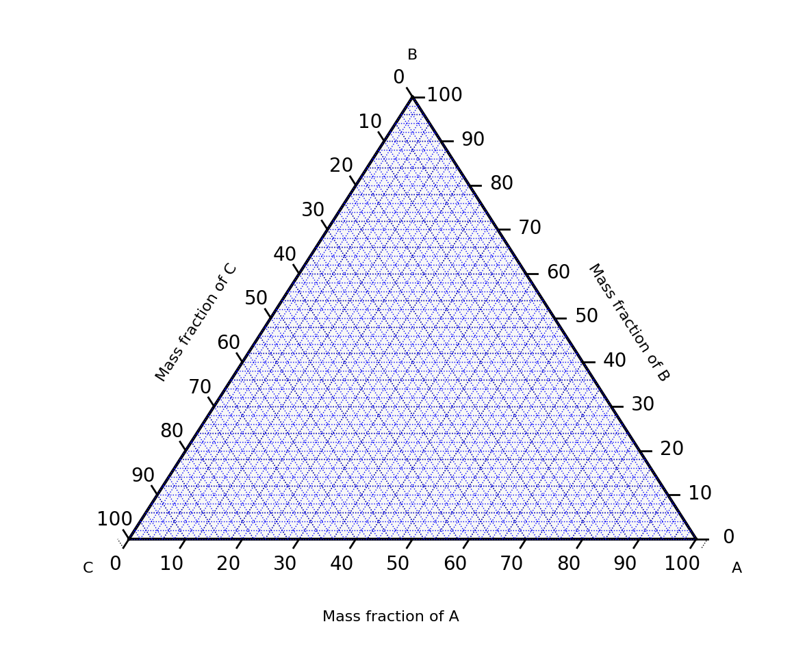
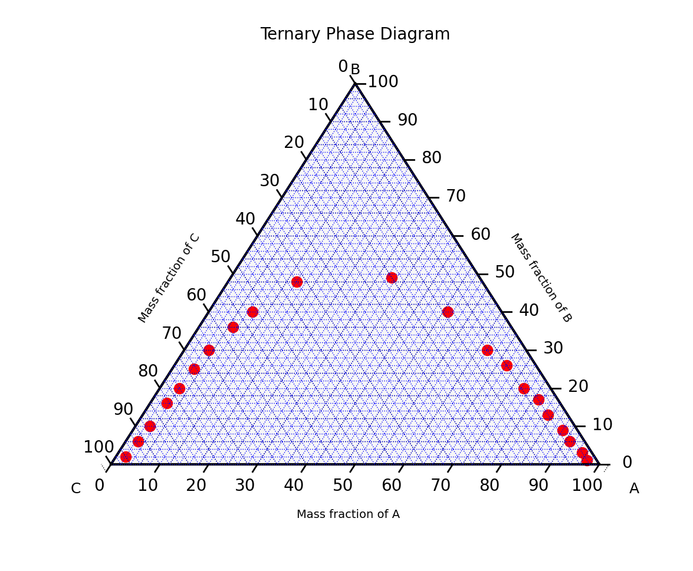
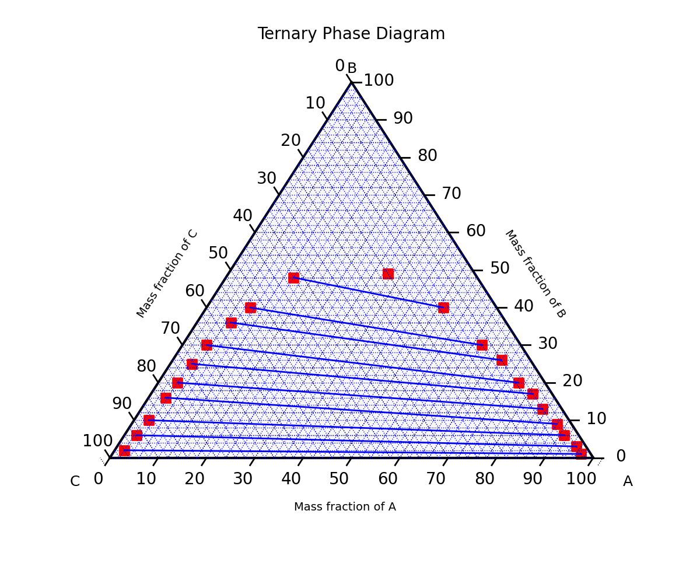
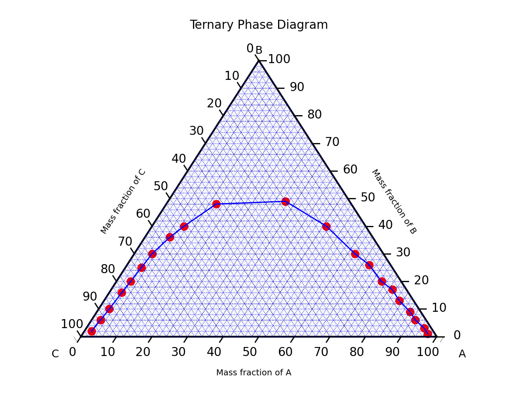
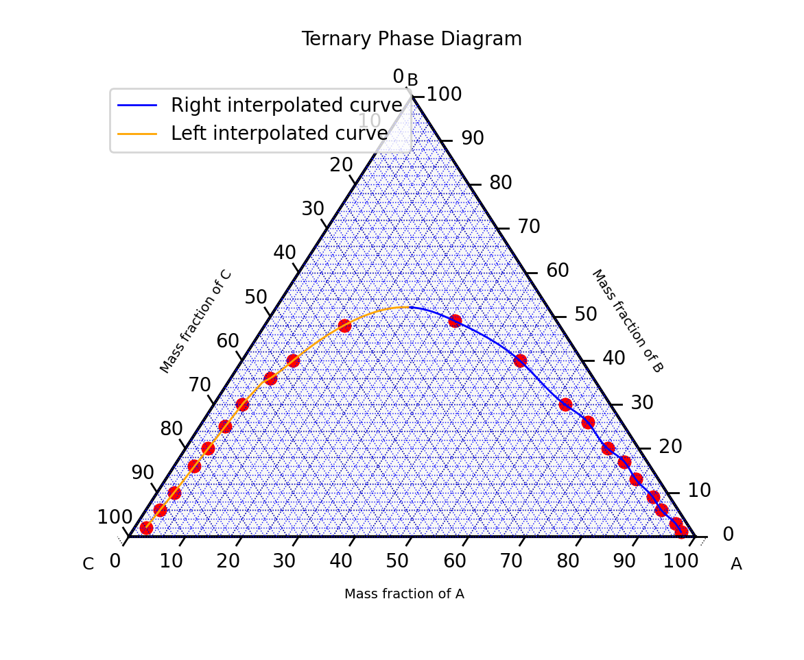

An article on how to use the open source Fqlearn library to plot three phase diagrams used in thermodynamics, also known as ternary plots.
Introduction #
During the Open Science Labs Q1 2024 internship, I worked on the Fqlearn project. Fqlearn is an open source python library, currently in development, which aims to facilitate the teaching of mass transfer and thermodynamics.
My main task involved developing methods to use a three phase diagram to solve
thermodynamics problems graphically. For this purpose, I wrote code for the
ThreeComponent.py
class, as well as corresponding
tests
for the class.
Ternary phase diagram #
A ternary plot, ternary graph, triangle plot, simplex plot, or Gibbs triangle is a barycentric plot on three variables which sum to a constant. It graphically depicts the ratios of the three variables as positions in an equilateral triangle. It is used in physical chemistry, petrology, mineralogy, metallurgy, and other physical sciences to show the compositions of systems composed of three species. Ternary plots are tools for analyzing compositional data in the three-dimensional case [1].

In a ternary plot, the values of the three variables a, b, and c must sum to some constant, K. Usually, this constant is represented as 1.0 or 100%. Because a + b + c = K for all substances being graphed, any one variable is not independent of the others, so only two variables must be known to find a sample's point on the graph: for instance, c must be equal to K − a − b. Because the three numerical values cannot vary independently—there are only two degrees of freedom—it is possible to graph the combinations of all three variables in only two dimensions.
The advantage of using a ternary plot for depicting chemical compositions is that three variables can be conveniently plotted in a two-dimensional graph. Ternary plots can also be used to create phase diagrams by outlining the composition regions on the plot where different phases exist [1].
Methods #
To begin with, we import the libraries required for plotting ternary phase
diagrams. We used
python-ternary, a plotting
library that uses matplotlib to make ternary plots. Using this library, many
features could be added to the fqlearn library for various purposes, as
described in this article.
import matplotlib as plt
import numpy as np
import ternary
from scipy.interpolate import CubicSpline
Then we define our class, ThreeComponent, in which we create some functions, a
few of which will be explained in this article. To see how these functions work,
we create some variables, which are lists containing an unordered list of
tuples, each containing 3 values, representing the x, y and z values in the form
[(x,y,z)].
right_eq_line = [(0.02, 0.02, 0.96), (0.025, 0.06, 0.915), (0.03, 0.1, 0.87),
(0.035, 0.16, 0.805), (0.04, 0.2, 0.76), (0.045, 0.25, 0.705),
(0.05, 0.3, 0.65), (0.07, 0.36, 0.57), (0.09, 0.4, 0.51),
(0.14, 0.48, 0.38), (0.33, 0.49, 0.18)]
left_eq_line = [(0.97, 0.01, 0.02), (0.95, 0.03, 0.02), (0.91, 0.06, 0.03),
(0.88, 0.09, 0.03), (0.83, 0.13, 0.04), (0.79, 0.17, 0.04),
(0.745, 0.2, 0.055), (0.68, 0.26, 0.06), (0.62, 0.3, 0.08),
(0.49, 0.4, 0.11), (0.33, 0.49, 0.18)]
points = left_eq_line + right_eq_line
We also set the scale of our plot to 100 in the __init__ function. This is the
value that each tuple must sum up to.
To start using the Three Component class, we can use the following code:
We can then call the functions as needed. We define a function sort_points
that sorts the values it receives as an argument. The points are added using the
add_point function, which ensures that the argument is not an empty list,
removes duplicate tuples, and multiplies each point in the tuple by the scale.
def add_point(self, points):
# Check if points is an empty list
if not points:
raise ValueError(
"The 'points' list cannot be empty. Please provide valid points."
)
# Remove duplicate points
points_to_plot = list(set(points))
# Multiply each point by the scale
points_to_plot = [
(x * self.scale, y * self.scale, z * self.scale)
for x, y, z in points_to_plot
]
# Add the points to the plot
self.tax.scatter(points_to_plot, linewidth=1.0, marker="o", color="red")
return points_to_plot
The sort_points function sorts the tuples using the x value in each tuple,
then adds them to a new list. This allows us to have the tuples sorted in
ascending order along the x-axis. The function also ensures that all points in
the tuple(s) in the sorted list add up to the scale.
def sort_points(self, points):
points_to_plot = self.add_point(points)
# Sort the points in ascending order
xyz = [(x, y, z) for x, y, z in points_to_plot]
sorted_points = sorted(xyz, key=lambda m: m[0])
# New list to store sorted points
new_sorted_points = []
# Check if the points are in a list of lists or a single list
if isinstance(
sorted_points[0], (int, float)
): # Check if the first element of points is a number
assert sorted_points[0] + sorted_points[1] + sorted_points[2] == self.scale
new_sorted_points.append(sorted_points)
else:
# If the points are in a list of lists
for sorted_point in sorted_points:
assert sorted_point[0] + sorted_point[1] + sorted_point[2] == self.scale
new_sorted_points.append(sorted_point)
# Add the points to the plot
self.tax.scatter(new_sorted_points, linewidth=1.0, marker="o", color="red")
return new_sorted_points
If we print the returned values, we get the following output, where each tuple is arranged in ascending order according to the x values:
[(2.0, 2.0, 96.0), (2.5, 6.0, 91.5), (3.0, 10.0, 87.0), (3.5000000000000004, 16.0, 80.5), (4.0, 20.0, 76.0), (4.5, 25.0, 70.5), (5.0, 30.0, 65.0), (7.000000000000001, 36.0, 56.99999999999999), (9.0, 40.0, 51.0), (14.000000000000002, 48.0, 38.0), (33.0, 49.0, 18.0), (49.0, 40.0, 11.0), (62.0, 30.0, 8.0), (68.0, 26.0, 6.0), (74.5, 20.0, 5.5), (79.0, 17.0, 4.0), (83.0, 13.0, 4.0), (88.0, 9.0, 3.0), (91.0, 6.0, 3.0), (95.0, 3.0, 2.0), (97.0, 1.0, 2.0)]
We can then call the plot function, to plot the ternary phase diagram in order
to visualize the plotted points.
def plot(self):
self.tax.clear_matplotlib_ticks()
self.tax.get_axes().axis("off")
self.tax.legend()
ternary.plt.show()
We obtain the ternary plot shown below:

We define the composition_line function which plots equilibrium lines joining
the tuples corresponding to the two compositions in each index in the list of
tuples. This function first multiplies each point in each tuple by the scale,
then sorts the list of the left composition in ascending order, and the list of
the right composition in descending order. For each tuple, the x, y and z values
are extracted, then joined using equilibrium lines.
def composition_line(self, left_eq_line, right_eq_line):
# Multiply each point by the scale
new_left_eq_line = [
(x * self.scale, y * self.scale, z * self.scale) for x, y, z in left_eq_line
]
new_right_eq_line = [
(x * self.scale, y * self.scale, z * self.scale)
for x, y, z in right_eq_line
]
# Sort the left points in ascending order
xyz = [(x, y, z) for x, y, z in new_left_eq_line]
sorted_left_eq_line = sorted(xyz, key=lambda m: m[0])
# Sort the right points in descending order
xyz = [(x, y, z) for x, y, z in new_right_eq_line]
sorted_right_eq_line = sorted(xyz, key=lambda m: m[0], reverse=True)
for i in range(len(left_eq_line)):
# Ensure all points add up to the scale
pointA = sorted_left_eq_line[i]
assert sum(pointA) == self.scale
pointB = sorted_right_eq_line[i]
assert sum(pointB) == self.scale
# Extract x and y coordinates of each point
xA, yA, zA = pointA
xB, yB, zB = pointB
# Add the two points to the plot
self.tax.scatter([(xA, yA, zA), (xB, yB, zB)], marker="s", color="red")
# Plot a line connecting the two points
self.tax.plot(
[(xA, yA, zA), (xB, yB, zB)],
linewidth=1.0,
color="blue",
)
We obtain the following ternary plot:

We can calculate the slope of the equilibrium lines plotted above using the
function eq_slope. We loop through each tuple of each composition in each
index, extract the x and y values, and find the slope, by dividing the change in
y by the change in x for each index. The function returns the average slope.
def eq_slope(self, right_eq_line, left_eq_line):
# Multiply each point by the scale
right_eq_line = [
(x * self.scale, y * self.scale, z * self.scale)
for x, y, z in right_eq_line
]
left_eq_line = [
(x * self.scale, y * self.scale, z * self.scale) for x, y, z in left_eq_line
]
# Sort the right points in ascending order
xyz = [(x, y, z) for x, y, z in right_eq_line]
right_eq = sorted(xyz, key=lambda m: m[0])
# Sort the left points in descending order
xyz = [(x, y, z) for x, y, z in left_eq_line]
left_eq = sorted(xyz, key=lambda m: m[0], reverse=True)
slopes = []
for i in range(len(right_eq_line)):
pointA = right_eq[i]
assert sum(pointA) == self.scale
pointB = left_eq[i]
assert sum(pointB) == self.scale
# Extract x and y coordinates of each point
xA, yA, _ = pointA
xB, yB, _ = pointB
# Calculate the slope of the line joining the points
if xA - xB != 0: # Check for vertical line
slope = (yA - yB) / (xA - xB)
slopes.append(slope)
else:
# For vertical lines, return None for slope
slopes.append(0)
print("Slope = ", slopes)
# Calculate average of the slopes
avg_slope = sum(slopes) / len(slopes)
print("Average slope = ", avg_slope)
return avg_slope
We obtain the following output:
Slope = [-0.010526315789473684, -0.032432432432432434, -0.045454545454545456, -0.08284023668639054, -0.08860759493670886, -0.10738255033557047, -0.14388489208633093, -0.16393442622950818, -0.18867924528301888, -0.22857142857142856, 0]
Average slope = -0.09930124252776436
We can also plot a ternary phase diagram with an equilibrium line joining all
the plotted points, like in a graph, by calling the add_eq_line function.
def add_eq_line(self, right_eq_line, left_eq_line):
# Add the points
self.right_eq_line = self.sort_points(right_eq_line)
self.left_eq_line = self.sort_points(left_eq_line)
eq_line = self.right_eq_line + self.left_eq_line
# Remove duplicate points
eq_line_plot = list(set(eq_line))
# Sort the points in ascending order
xyz = [(x, y, z) for x, y, z in eq_line_plot]
sorted_eq = sorted(xyz, key=lambda m: m[0])
self.tax.plot(sorted_eq, linewidth=1.0, color="blue", label="Equilibrium line")
We get the ternary plot below:

However, the equilibrium line plotted above is not smooth. To generate a smooth
line, we use the interpolate_points function.
We first sort the points using the sort_points function. Then we extract the x
and y values from the sorted points, ignoring the z values which will not be
used. Variable x becomes a list of all x values and variable y becomes a
list of all y values. After that, we perform cubic spline interpolation on the x
and y values using the CubicSpline function, imported from the scipy.interpolate
module of SciPy's library
[2].
bc_type="natural" specifies the natural boundary conditions, meaning the
second derivative of the spline at the boundaries will be set to zero. x_cubic
is set to a linearly spaced array of values ranging from 0 to 100 with 100
number of points, which is the value of self.scale, and y_cubic contains the
corresponding y values interpolated using the cubic spline function f. Then we
filter out any points outside the specified range of 0 to 100 for both x_cubic
and y_cubic, and use the np.column_stack function to combine x_cubic and
y_cubic into a single 2D array, which is returned by the function as
interpolated_points.
def interpolate_points(self, points):
sorted_points = self.sort_points(points)
# Cubic spline interpolation
x = [x for x, y, _ in sorted_points]
y = [y for x, y, _ in sorted_points]
f = CubicSpline(x, y, bc_type="natural")
x_cubic = np.linspace(0, self.scale, self.scale)
y_cubic = f(x_cubic)
# Remove negative points
interpolated_points = [
[i, j]
for i, j in np.column_stack((x_cubic, y_cubic))
if 0 <= i <= self.scale and 0 <= j <= self.scale
]
return interpolated_points
Printing the output of the function, we obtain the output below, showing the interpolated points:
[[2.0202020202020203, 2.1691472640742586], [3.0303030303030303, 10.329514857514697], [4.040404040404041, 20.340775738329878], [5.050505050505051, 30.41604117022922], [6.0606060606060606, 34.9725244736696], [7.070707070707071, 36.0788150823154], [8.080808080808081, 37.866519430111914], [9.090909090909092, 40.207639450509895], [10.101010101010102, 42.33305618527275], [11.111111111111112, 44.15164951408806], [12.121212121212121, 45.70152886497335], [13.131313131313131, 47.02080366594621], [14.141414141414142, 48.147569717383064], [15.151515151515152, 49.11261947676193], [16.161616161616163, 49.927423194367556], [17.171717171717173, 50.600292249170636], [18.181818181818183, 51.13953802014185], [19.191919191919194, 51.55347188625187], [20.202020202020204, 51.850405226471395], [21.212121212121215, 52.038649419771076], [22.222222222222225, 52.12651584512162], [23.232323232323235, 52.122315881493684], [24.242424242424242, 52.03436090785797], [25.252525252525253, 51.87096230318516], [26.262626262626263, 51.640431446445916], [27.272727272727273, 51.35107971661092], [28.282828282828284, 51.011218492650855], [29.292929292929294, 50.62915915353641], [30.303030303030305, 50.213213078238255], [31.313131313131315, 49.771691645727074], [32.323232323232325, 49.31290623497355], [33.333333333333336, 48.84510804535748], [34.343434343434346, 48.37284930204433], [35.35353535353536, 47.89489752249601], [36.36363636363637, 47.409516570717145], [37.37373737373738, 46.91497031071236], [38.38383838383839, 46.40952260648627], [39.3939393939394, 45.891437322043494], [40.40404040404041, 45.358978321388655], [41.41414141414142, 44.81040946852637], [42.42424242424243, 44.24399462746127], [43.43434343434344, 43.65799766219796], [44.44444444444445, 43.050682436741056], [45.45454545454546, 42.4203128150952], [46.46464646464647, 41.765152661265006], [47.47474747474748, 41.083465839255076], [48.484848484848484, 40.373516213070054], [49.494949494949495, 39.63371670174959], [50.505050505050505, 38.86607499990182], [51.515151515151516, 38.076288591118626], [52.525252525252526, 37.270223020764256], [53.535353535353536, 36.45374383420295], [54.54545454545455, 35.63271657679892], [55.55555555555556, 34.81300679391643], [56.56565656565657, 34.000480030919704], [57.57575757575758, 33.201001833172974], [58.58585858585859, 32.42043774604049], [59.5959595959596, 31.664653314886465], [60.60606060606061, 30.93951408507516], [61.61616161616162, 30.250885601970786], [62.62626262626263, 29.60336029919871], [63.63636363636364, 28.983912044764498], [64.64646464646465, 28.366648419185424], [65.65656565656566, 27.72538388514391], [66.66666666666667, 27.0339329053224], [67.67676767676768, 26.26610994240331], [68.68686868686869, 25.39917799115036], [69.6969696969697, 24.44860975371087], [70.70707070707071, 23.453665293050822], [71.71717171717172, 22.45396405508463], [72.72727272727273, 21.489125485726685], [73.73737373737374, 20.59876903089141], [74.74747474747475, 19.822230508859366], [75.75757575757576, 19.162761793258028], [76.76767676767678, 18.552564414178864], [77.77777777777779, 17.915539652280298], [78.7878787878788, 17.175588788220747], [79.7979797979798, 16.27016258697005], [80.80808080808082, 15.240129979240486], [81.81818181818183, 14.174027140890017], [82.82828282828284, 13.160644754568583], [83.83838383838385, 12.27416074496895], [84.84848484848486, 11.4905826393484], [85.85858585858587, 10.745488901010873], [86.86868686868688, 9.974332435176901], [87.87878787878789, 9.112566147067007], [88.8888888888889, 8.11684009659671], [89.89898989898991, 7.065697936762742], [90.90909090909092, 6.081168542871885], [91.91919191919193, 5.257512388433542], [92.92929292929294, 4.543021889369125], [93.93939393939395, 3.8382841183777483], [94.94949494949496, 3.043859233178794], [95.95959595959597, 2.0885249765853326], [96.96969696969697, 1.0322241687602192]]
Next, we define a function, div_half, to divide an equilibrium line in half,
and thus dividing the interpolated points in the left side from those in the
right side. Before that, we define some helper functions, derivative and
min_diff.
The derivative function extracts the x and y values, then calculates the n-th
discrete difference between these values using NumPy's np.diff
[3]. The
first value of dydx is given by dydx[i] = (y[i+1] - y[i])/(x[i+1] - x[i]) along
the given axis and higher differences are calculated by using np.diff
recursively.
def derivative(self, points):
points_to_derive = self.interpolate_points(points)
# Extract x and y values
x = [x for x, _ in points_to_derive]
y = [y for _, y in points_to_derive]
# Calculate derivative
dydx = np.diff([y]) / np.diff([x])
return dydx
We can print out dydx to see the output:
[[ 8.07876392e+00 9.91114827e+00 9.97451278e+00 4.51091847e+00
1.09522770e+00 1.76982730e+00 2.31770882e+00 2.10416257e+00
1.80040740e+00 1.53438056e+00 1.30608205e+00 1.11549839e+00
9.55399262e-01 8.06655680e-01 6.66140364e-01 5.33853313e-01
4.09794527e-01 2.93964007e-01 1.86361751e-01 8.69877611e-02
-4.15796399e-03 -8.70754239e-02 -1.61764619e-01 -2.28225548e-01
-2.86458213e-01 -3.36462612e-01 -3.78238746e-01 -4.11786615e-01
-4.37106218e-01 -4.54197557e-01 -4.63120208e-01 -4.67536156e-01
-4.73172262e-01 -4.80527142e-01 -4.89600797e-01 -5.00393227e-01
-5.12904432e-01 -5.27134411e-01 -5.43083164e-01 -5.60750693e-01
-5.80136996e-01 -6.01242073e-01 -6.24065925e-01 -6.48608552e-01
-6.74869954e-01 -7.02850130e-01 -7.32401516e-01 -7.59965285e-01
-7.81888545e-01 -7.98004915e-01 -8.08314395e-01 -8.12816985e-01
-8.11512685e-01 -8.04401495e-01 -7.91483416e-01 -7.72758446e-01
-7.48226587e-01 -7.17887838e-01 -6.81742198e-01 -6.41050050e-01
-6.13253772e-01 -6.11090989e-01 -6.34851889e-01 -6.84536470e-01
-7.60144733e-01 -8.58262632e-01 -9.41062555e-01 -9.84995016e-01
-9.89704226e-01 -9.55190184e-01 -8.81452890e-01 -7.68773137e-01
-6.52874028e-01 -6.04095405e-01 -6.30654514e-01 -7.32551355e-01
-8.96371939e-01 -1.01973228e+00 -1.05544181e+00 -1.00324856e+00
-8.77619170e-01 -7.75742325e-01 -7.37642801e-01 -7.63444901e-01
-8.53148625e-01 -9.85768790e-01 -1.04063074e+00 -9.74684100e-01
-8.15419593e-01 -7.07345594e-01 -6.97690393e-01 -7.86480636e-01
-9.45780914e-01 -1.04573780e+00]]
Then we use the min_diff function to find the index of the point that is at
the centre of the equilibrium line, which divides it into 2 halves. Starting
with an index value of zero and a minimum difference given by the difference
between the absolute of the first dydx value and the average slope, we iterate
over the indices of dydx to find the index of the dydx value which is
closest to the average slope avg_slope.
def min_diff(self, right_eq_line, left_eq_line):
self.points = right_eq_line + left_eq_line
dydx = self.derivative(self.points)
avg_slope = self.eq_slope(right_eq_line, left_eq_line)
min_index = 0
# Initialize min_diff_value with the first element difference
min_diff_value = abs(dydx[0][0] - avg_slope)
# Iterate over indices of dydx
for index in range(0, dydx.size):
diff = abs(dydx[0][index] - avg_slope)
if diff < min_diff_value:
min_diff_value = diff
min_index = index
return min_index
We then define the div_half function that divides the equilibrium line
precisely in half. We use the interpolated points from the interpolate_points
function, which ensures that the point of division is very precise. Then we use
the min_diff function to obtain the index of the point dividing the
equilibrium line in half. Using this index, we can halve the interpolated
points, and plot two equilibrium lines on the right and left side of the ternary
plot using these points.
def div_half(self, right_eq_line, left_eq_line):
# Add the points
self.points = right_eq_line + left_eq_line
interpolated_points = self.interpolate_points(self.points)
# Use index to separate right and left side
index = self.min_diff(right_eq_line, left_eq_line)
self.interpolated_right_side = interpolated_points[index:]
self.interpolated_left_side = interpolated_points[: index + 1]
# Plot the curve
self.tax.plot(
self.interpolated_right_side,
linewidth=1.0,
color="blue",
label="Right interpolated curve",
)
self.tax.plot(
self.interpolated_left_side,
linewidth=1.0,
color="orange",
label="Left interpolated curve",
)
We obtain the following ternary plot:

Acknowledgements #
I would like to thank the Open Science Labs and The Graph Network for giving me the opportunity to learn and gain experience in open source through this internship. I also thank Ever Vino for his guidance and mentorship throughout this internship program. If you would like to connect with me, you can find me on LinkedIn, or check out my personal website.
References #
[1] Ternary plots - Wikipedia: https://en.wikipedia.org/wiki/Ternary_plot
[2] scipy.interpolate.CubicSpline - SciPy v1.13.1 Manual: https://docs.scipy.org/doc/scipy/reference/generated/scipy.interpolate.CubicSpline.html
[3] numpy.diff - NumPy v1.26 Manual: https://numpy.org/doc/stable/reference/generated/numpy.diff.html